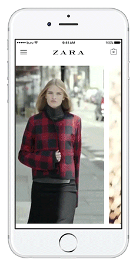
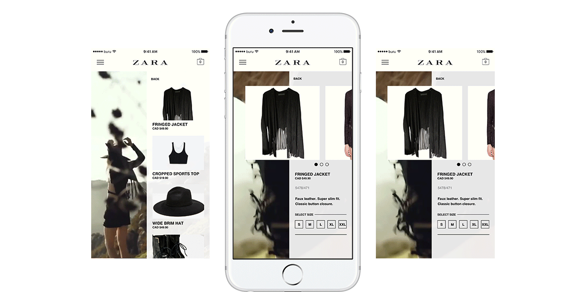
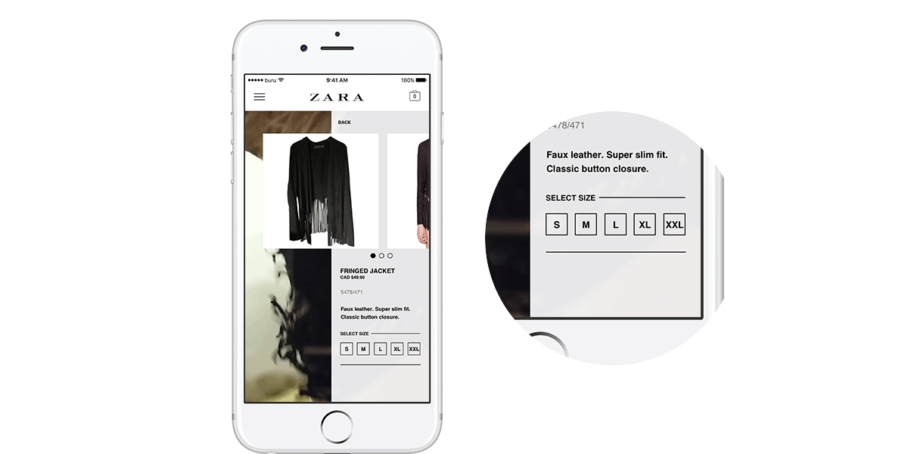

Zara is a well known in the fashion industry for their editorial style and as of August 2016 their website and apps features an editorial page where they showcase unique styles part of featured campaigns that resembles like a magazine.
While the website version makes good use of the canvas to portray unique layouts that brings out the branding of Zara,
Upon doing some browsing through Zara's campaigns I found some videos that were a part of the campaign.
I started off the project by researching the current aesthetics of Zara's UX and UI in both web and mobile. Keeping in mind of Zara's use of typography and layouts I went to wireframe the possibilities and focusing on mobile first.
While Zara effectively uses static images to curate different layouts to portray an editorial feeling and unique storytelling elements which emphasizes their branding, it does not work the same way for mobiles.
However this can be used as an advantaged if use a strategy that showcase the content as full as we can. By using videos, scrolling continuous is not needed to observe and get the feeling of the unique individual campaigns.

Transitions using videos between interactions not only gives feedback that user has taken an action but also helps continue the storytelling. This is perfect when used along the campaign videos Zara uses to show off the concept.

This makes the transitional visuals distinctive from the videos as the user go from one page to another. It also offers flexibility to how Zara can portray different kinds of transitions through their concept.

The end result is a feature that brings out more of the unique individual concepts for the Zara editorial pages which takes advantages of devices with a small real estate.
When reached to the lookbook page, all the campaigns are first presented in a horizontal list with video snippets to portray the specific model and concept. Going into one expands the snippet to a full page background to represent a transition into the specific page.
After choosing a campaign, a transition will take place and bring out a list of products were featured. As mentioned before, the transition helps make a subtle connection between the style concept and product.
Selecting a product will then bring out more information as well presenting an option to adding into the shopping cart. The microinteraction helps users understand the process adding a product into their cart after confirming with the picked size.